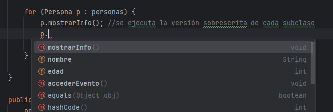

Como ya venimos haciendo desde que conocemos el polimorfismo, uno de los usos principales es el de poder guardar en una misma estructura (normalmente arrays) varios tipos de subclases de la siguiente manera:
Persona[] personas = {
new Asistente("Lucas", 18, "VIP"),
new Artista("Sofía", 25, "Rock Alternativo"),
new Organizador("Martín", 30, "Producción")
};Con esta estructura, llamábamos a métodos que compartían todas las subclases, como por ejemplo mostrarInfo():
for (Persona p : personas) {
p.mostrarInfo(); //se ejecuta la versión sobrescrita de cada subclase
}Pero, ¿qué pasaría si el método a invocar no existiera en todas las "hijas"? Es el caso en que nos encontramos ahora mismo si quisiéramos usar alguno de los que hemos implementado sólo en la clase Organizador, usando las interfaces Promocionable y Organizable.
Como ves, si intentamos acceder a los métodos de la interfaz, no nos está permitido:

Para poder invocarlos, deberemos usar la condición instanceof con la finalidad de asegurarnos de que un objeto usa una interfaz, y cuando lo hayamos corroborado, entonces hacer uso de esos métodos (nunca antes):
for (Persona p : personas) {
p.mostrarInfo(); //se ejecuta la versión sobrescrita de cada subclase
if (p instanceof Organizable) {
Organizable org = (Organizable) p;
org.organizarEvento();
}
} Por lo tanto, cuando hagamos polimorfismo se debe verificar la implementación de una interfaz con instanceof ANTES de intentar acceder a un método propio de dicha interfaz.
Por lo tanto, cuando hagamos polimorfismo se debe verificar la implementación de una interfaz con instanceof ANTES de intentar acceder a un método propio de dicha interfaz.
if (objeto instanceof Tipo) {
//entonces podemos convertirlo (cast) y usarlo como Tipo
}